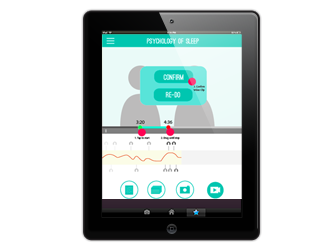
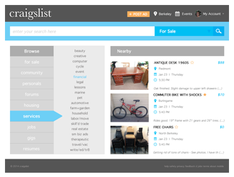
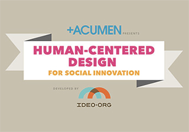
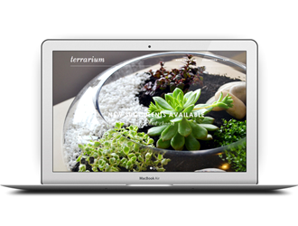
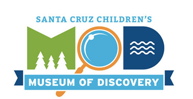
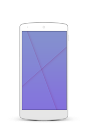

Website for Student Entreprenuership
HCD for Social Innovation with IDEO
User Research, Brainstorming, Prototyping


Mobile Museum Exhibit
Santa Cruz Children's Museum of Discovery
User Research, Prototyping, Model Builidng
